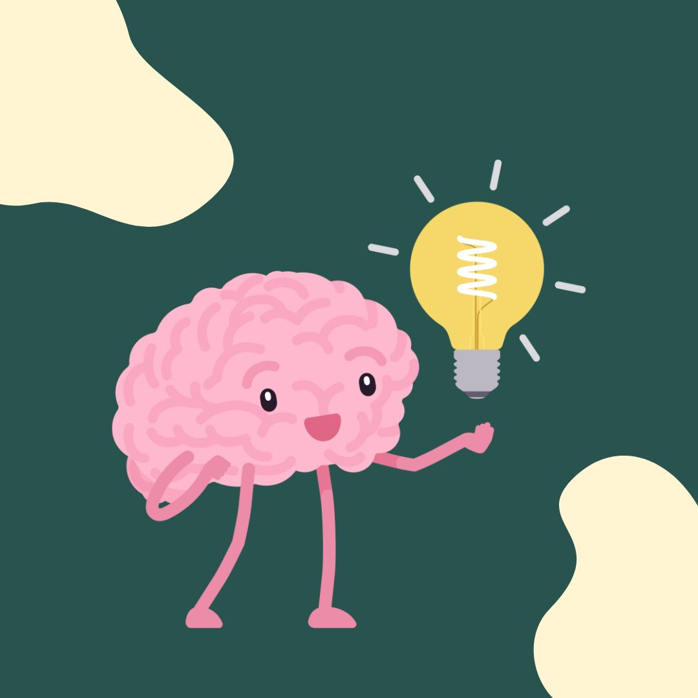
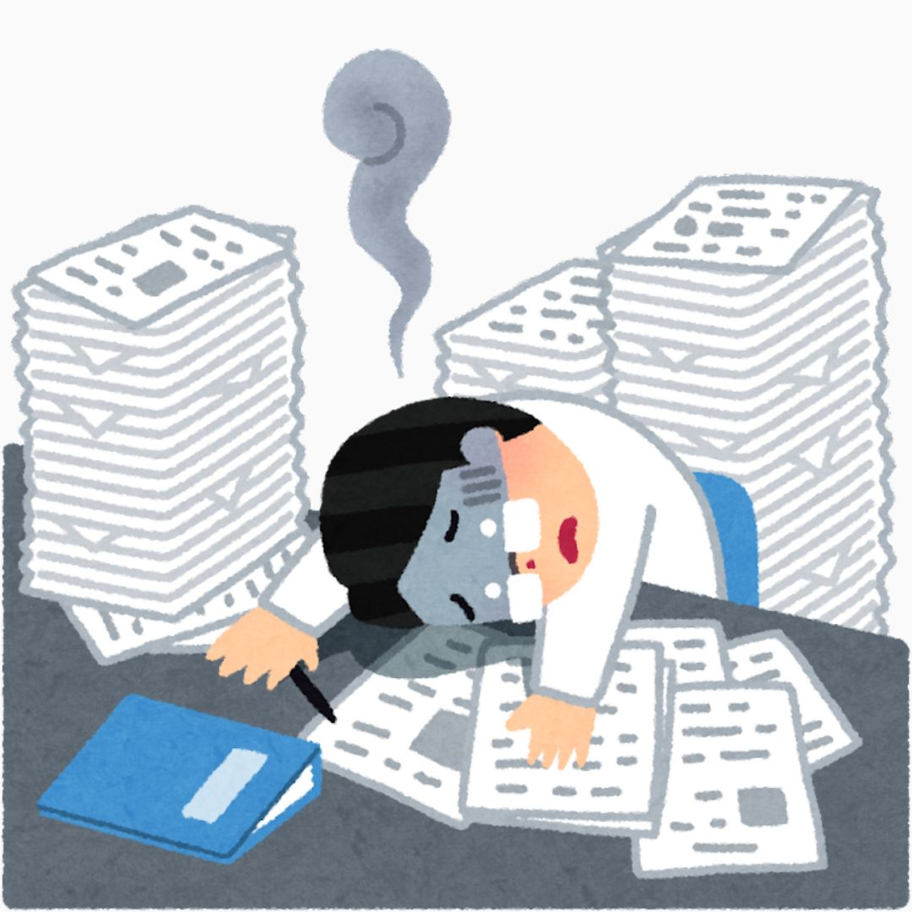

1. Trí nhớ là gì?

Từ đầu cuốn sách, chúng ta liên tục bàn luận và nhắc đến “trí nhớ”, nhưng rốt cuộc “trí nhớ” là gì?
Trí nhớ có thể hiểu đơn giản là khả năng lưu giữ thông tin, không chỉ là đặc quyền của con người mà tồn tại ở cả động vật. Tùy theo độ phức tạp của bộ não mà mỗi loài vật có những cấp độ nhớ khác nhau. Các cấp độ này được biểu hiện qua các hành động, tập tính hay thói quen như các loài chim hàng năm vẫn vượt hàng ngàn cây số bay từ phương Bắc về phương Nam tránh rét, đàn voi khi sống trong môi trường hạn hán vẫn nhớ và tìm tới nơi dồi dào thức ăn và nước uống,...
Nhưng khác với loài vật, trí nhớ của con người phức tạp và đa dạng hơn. Bởi nó luôn đi kèm với nhận thức. Thực tế, trí nhớ gồm ba quá trình chính sau:
Quá trình ghi nhận: Là khả năng ghi lại thông tin nhờ quá trình hưng phấn ở những vùng tương ứng của bộ não trước các kích thích thực tại: càng chú ý và thích thú với kích thích bao nhiêu, quá trình ghi nhận càng chắc chắn, rõ ràng bấy nhiêu. Quá trình ghi nhận có thể chủ động, tích cực, có thể không chủ định, vô thức.
Quá trình lưu trữ (bảo tồn): Là quá trình hình thành những đường liên hệ tạm thời duy trì dấu vết của những kích thích đã tác động vào não. Kích thích càng mạnh, càng lặp lại nhiều lần thì quá trình lưu trữ càng bền vững.
Quá trình tái hiện (nhớ lại): Là quá trình khôi phục lại những thông tin đã được lưu trữ. Sự tái hiện xuất hiện dưới hai hình thức:
Nhận lại: Thông qua các giác quan, nhận ra những đối tượng đã kích thích trước kia, nay đang trực tiếp tác động vào các giác quan. Ví dụ: Nhận ra một người quen trong đám đông.
Hiện lại: Kinh nghiệm và tri thức cũ, không cần thông qua tri giác đối tượng kích thích trước kia vẫn có thể hiện ra trong óc, không cần sự có mặt trực tiếp của chúng. Ví dụ: Hiện lại khuôn mặt của ba mẹ mỗi lúc nhớ nhung.
Chính vì vậy, trí nhớ là quá trình tâm lý phản ánh những kinh nghiệm, tri thức của con người bằng cách ghi nhận, bảo tồn và tái hiện lại chúng dưới dạng biểu tượng, ý niệm và ý tưởng.
Trí nhớ phản ánh bản thân hiện thực được con người tích lũy thông qua kinh nghiệm và biến chúng trở thành vốn riêng của mình. Tóm lại, trí nhớ là sự tổng hoà của nhiều yếu tố phức tạp. Nếu như nhận thức là cơ sở để con người nhận biết thế giới, từ đó tìm ra cách phù hợp để tác động vào thế giới nhằm đem lại hiệu quả cao nhất thì trí nhớ là công cụ để những nhận biết đó được lưu trữ, từ đó tiếp tục phát triển hoàn chỉnh hơn trong những giai đoạn sau này. Và cũng chính trong quá trình ghi nhớ, nhờ nhận thức, chúng ta biết lựa chọn, tập trung vào một khía cạnh nào đó, bỏ qua tất cả những điều còn lại, thúc đẩy quá trình chọn lọc hiệu quả và kích thích mong muốn ghi nhớ trong mỗi con người.
2. Nguyên nhân gây suy giảm trí nhớ

Suy giảm trí nhớ tuy không gây hại cho sức khỏe nhưng đem lại rất nhiều phiền toái và khó chịu cho mỗi chúng ta. Bạn đến lớp và chợt nhận ra mình đã để quên cuốn vở ghi chép ở nhà. Và nếu được ưu ái gọi lên bảng trả bài, bạn sẽ làm sao? Hay một anh bạn trong lớp cuống cuồng lao vào lớp cho kịp giờ học trong bộ quần áo xộc xệch… Những phiền toái ấy xuất phát từ rất nhiều nguyên nhân. Việc xác định rõ các nguyên nhân sẽ giúp bạn có những biện pháp phòng tránh và ghi nhớ hiệu quả, đồng thời giúp mang lại những giây phút dễ chịu, thoải mái hơn cho cuộc sống của mình và những người xung quanh.
Nguyên nhân khách quan
Những nguyên nhân thuộc dạng này thường là do bệnh lý hoặc tai nạn. Nó bao gồm các nguyên nhân khó tránh như: suy giảm trí nhớ do tuổi tác; đột biến gen; rối loạn giấc ngủ; rối loạn tăng động giảm chú ý (Tên tiếng Anh: ADHD – Hyperactivity and attention deficit disorder) (khoảng 4% học sinh mắc phải bệnh lý này); các bệnh như thiểu năng tuần hoàn não, thoái hóa não (như bệnh Alzheimer), u não, viêm não siêu vi…, chấn thương vùng đầu do tai nạn.
Ngoài ra, còn có những nguyên nhân có thể xuất phát từ những thói quen xấu của con người nhưng xét về mặt tổng thể vẫn xếp vào dạng khách quan. Đó là các bệnh như tai biến mạch máu não, các bệnh lý về gan, tuyến giáp, rối loạn giấc ngủ do stress. Đồng thời việc sử dụng một số loại thuốc như: gây mê, thuốc chống trầm cảm, thuốc ngủ, thuốc gây nghiện lâu ngày cũng có thể gây suy giảm trí nhớ.
Cuối cùng cần phải kể thêm căn bệnh trầm cảm mà nguyên nhân của nó chủ yếu đến từ các yếu tố khách quan. Bản chất của trầm cảm là khiến người bệnh thờ ơ, không chú ý đến xung quanh, giảm quan sát, có cảm giác mất năng lực trong cuộc sống. Do đó, bệnh nhân trầm cảm không buồn để ý đến bất cứ thứ gì, và đương nhiên suy giảm khả năng ghi nhớ.

Nguyên nhân chủ quan
Đây mới là nguyên nhân chính khiến bạn bị suy giảm trí nhớ. Chính thói quen sống không khoa học khiến cơ thể bạn bị tổn hại nghiêm trọng. Lối sống thiếu lành mạnh sẽ ảnh hưởng trực tiếp đến thể lực và trí lực của bạn. Có thể kể đến những thói quen có hại thường hay gặp dưới đây.
Nguyên nhân chủ quan
Đây mới là nguyên nhân chính khiến bạn bị suy giảm trí nhớ. Chính thói quen sống không khoa học khiến cơ thể bạn bị tổn hại nghiêm trọng. Lối sống thiếu lành mạnh sẽ ảnh hưởng trực tiếp đến thể lực và trí lực của bạn. Có thể kể đến những thói quen có hại thường hay gặp dưới đây.
Uống rượu: Nghiện rượu, nhất là rượu mạnh, chính là tác nhân gây nên những tổn thương rất khó, thậm chí là không thể phục hồi ở não bộ. Việc uống rượu thường xuyên không chỉ làm cho trí óc của bạn thường xuyên thiếu minh mẫn để làm việc và học tập tốt mà còn là tác nhân góp phần gây ra các bệnh về gan.
Thức khuya: Đêm là thời gian nghỉ ngơi để não sàng lọc và sắp xếp lại những thông tin, ký ức đã diễn ra ban ngày. Nếu bạn thức khuya, thay vì được nghỉ ngơi, não bạn lại phải hoạt động. Điều này khiến cho chức năng ghi nhớ của não bị rối loạn. Một giấc ngủ đủ và sâu sẽ cải thiện chức năng của não, bảo vệ não tránh nguy cơ suy giảm trí nhớ. Không chỉ vậy, để thức được khuya, nhiều bạn sử dụng các loại thức uống kích thích như cà phê, trà...Việc sử dụng thường xuyên các loại thức uống này một cách không phù hợp khiến tinh thần bạn luôn căng thẳng và các tế bào thần kinh mau chóng bị lão hóa.
Thường xuyên tiếp xúc với các hóa chất độc hại: Việc thường xuyên ăn các loại thực phẩm không rõ nguồn gốc, phẩm màu độc hại sẽ khiến cho cơ thể bạn tích tụ các hóa chất. Lâu ngày chúng sẽ tấn công cơ thể, trong đó có não bộ.
Hút thuốc: Nghiên cứu khoa học đã chứng minh rằng, những người nghiện thuốc nặng có vấn đề về trí nhớ nhiều hơn những người không hút thuốc. Với mỗi lần hút, chất nicotin có trong thuốc lá sẽ tích tụ ở não từ 3- 5 phút. Lâu dần, chúng sẽ làm co hẹp các mạch máu, khiến não bộ kém nhạy bén và chức năng ghi nhớ giảm. Không chỉ vậy, nó còn là nguyên nhân chính gây ra các bệnh tai biến mạch máu não, các bệnh về gan.
Thường xuyên tiếp xúc với môi trường thiếu oxy: Thói quen trùm kín chăn khi ngủ hay ở lâu trong phòng đóng kín cửa sẽ khiến lượng oxy cung cấp cho cơ thể quá ít trong khi lượng CO2 lại gia tăng. Tình trạng thiếu oxy kéo dài sẽ khiến các tế bào não hoạt động kém linh hoạt, dễ bị tổn thương.
Sử dụng điện thoại quá nhiều: Ngày nay điện thoại di động là một vật dụng không thể thiếu đối với con người. Nếu bạn là một tín đồ công nghệ (sử dụng điện thoại để nghe gọi, nhắn tin, lướt web từ 5 giờ đồng hồ trở lên mỗi ngày), chính bạn đang tự tay phá hoại trí nhớ của mình. Bức xạ từ sóng điện thoại chính là một trong những tác nhân gây thương tổn cho các tế bào thần kinh và vùng trung tâm trí nhớ của vỏ não. Do đó, sử dụng điện thoại với tần suất cao sẽ là một trong những nguyên nhân khiến não bạn đối diện với nguy cơ giảm trí nhớ. Ngoài ra, nó còn ảnh hưởng đến hoạt động của những nhóm gen có liên quan đến bộ nhớ.
Ngoài ra, một số nguyên nhân tâm lý như: stress, mất ngủ do căng thẳng khiến khả năng ghi nhớ của bạn mai một dần theo thời gian.
Tóm lại, dù đó là nguyên nhân khách quan hay chủ quan thì chúng đều có ảnh hưởng tiêu cực đến cuộc sống của bạn. Nó cũng chính là khởi nguồn của rất nhiều những hậu quả khó lường mà chúng ta phải đối mặt do những thói quen xấu trong cuộc sống của chính bản thân mỗi người.
4. Một số sai lầm khi cải thiện trí nhớ
Học càng nhiều nhớ càng lâu
Đôi khi bạn cảm thấy mình không thông minh bằng người khác, vì thế khi kỳ thi đến gần, bài vở còn nhiều, các kiến thức chồng chéo lên nhau, bạn ra sức học với suy nghĩ rằng cách duy nhất để tăng cường trí nhớ là học và học.
Bạn học ngày, học đêm mà không dành cho mình chút thời gian ngơi nghỉ nào, thậm chí có những bạn còn suy nghĩ rằng: cứ học đã, thi xong tha hồ nghỉ ngơi xả láng. Thế nhưng vừa học xong hôm nay, hôm sau kiến thức đã bay biến đâu mất. Vì thế, bạn càng ra sức học với cường độ cao hơn vì cho rằng mình vẫn chưa đủ cần cù mà không biết rằng điều đó hoàn toàn phản tác dụng.
Bộ não của chúng ta cũng cần nghỉ ngơi. Khi bị nhồi nhét quá nhiều, kiến thức sẽ trở nên “bão hòa” và việc học chỉ còn là hình thức. Bạn không thể tiếp thu được gì, chưa kể nhầm lẫn vấn đề này sang vấn đề khác.
Vì vậy cần phải có thời gian cho trí óc bạn nghỉ ngơi, thư giãn. Nhưng bạn nhớ đừng chọn thư giãn bằng cách đánh bài, cá độ bóng đá hay chơi điện tử… Những việc mà bạn tưởng như đúng đắn đó chỉ càng làm thần kinh của bạn căng thẳng thêm. Tại sao bạn không lựa chọn cách đi dạo, tập thể dục nhẹ nhàng hay nghe một vài bản nhạc thú vị. Nó sẽ khiến bạn thấy dễ chịu và thư thái hơn trước khi tiếp tục ngồi trở lại bàn học.
Học thuộc lòng
Ngay từ khi còn bé, khi mới bắt đầu đi học, chúng ta thường được các thầy cô nhắc nhở “các em nhớ học thuộc bài trước khi đến lớp nhé!” hay cha mẹ dặn rằng “phải học thuộc bài và làm bài xong rồi mới được chơi.” Vì thế, chính những điều này đã nhen nhóm trong mỗi chúng ta về một phương pháp học tập gắn liền với việc “học thuộc lòng”. Đã bao giờ bạn băn khoăn liệu “học thuộc lòng” có phải là một phương pháp tối ưu?
Nhiều bạn khẳng định cách nhớ đơn giản và hiệu quả nhất là học thuộc lòng. Họ chỉ cần học thuộc hết những gì thầy cô truyền dạy trên lớp hay kiến thức trong sách vở. Có nhiều bạn không ghi chép bài vở, lên lớp chểnh mảng và đến ngày thi, họ mượn vở của bạn bè đem sao chép rồi học thuộc. Thậm chí, nhiều bạn còn mượn cả đề cương môn học hay các bài tiểu luận của bạn bè. Họ chỉ cần “học thuộc và học thuộc” rồi đem những kiến thức đó vào phòng thi. Họ nghĩ đây là phương pháp “chắc ăn”, giúp họ không bỏ sót kiến thức nào.
Nhưng học tập cần nhiều hơn thế. Nó đòi hỏi một phương pháp thông minh, sự khéo léo, khả năng xử lý thông tin và áp dụng linh hoạt vào bài làm thay vì bê nguyên xi hay sao chép toàn bộ. Họ có thể buồn bã, không biết nguyên nhân tại sao mình lại thi trượt hoặc bị điểm kém. Họ học chỉ để trả bài, để đối phó và chọn bề nổi – điểm số – để làm mục đích học tập của mình. Sau các kỳ thi hoặc các bài kiểm tra, kiến thức của họ lại trở về con số không.
Việc học thuộc lòng mà không cần hiểu bài hay học vẹt làm não bạn trở nên thụ động và lười suy nghĩ. Khi quên một câu giữa đoạn hoặc gặp những câu đòi hỏi sự suy luận, bạn sẽ ngắc ngứ không thể tiếp tục mạch viết hoặc ngộ nhận các câu hỏi kia là kiến thức hoàn toàn mới mẻ, như các bạn thường gọi đùa là kiểu “tủ đè chết người”.

Vì vậy muốn tránh tình trạng này, bạn phải xác định phương pháp học để nhớ nhanh và nhớ lâu. Hãy dành cả con tim và khối óc của bạn vào mỗi bài học, đặt kiến thức, sự hiểu biết thay vì điểm số lên hàng đầu. Có như vậy trí nhớ mới càng ngày càng được mài giũa, tôi rèn và được củng cố theo thời gian.
Học càng khuya càng nhớ nhanh
Khi kỳ thi đến gần, nhiều bạn học sinh, sinh viên ra sức học, thậm chí thường xuyên thức khuya. Lâu dần hình thành thói quen học về khuya. Họ biến mình thành “cú đêm” lúc nào không hay.
Đối với họ, học khuya là phương thức tối ưu hiệu quả bởi họ cho rằng: Càng về khuya không gian càng yên tĩnh, học vào thời gian này dễ tiếp thu, nhớ bài mau hơn.
Nhưng bạn có biết “khoảng thời gian từ 11 giờ đêm đến 5 giờ sáng là thời gian mà cơ thể tạo ra các chất tái sinh, nâng cao hệ miễn dịch, đặc biệt con người có giấc ngủ sâu và tốt nhất trong khoảng từ 11 đến 2 giờ sáng”?
Nếu không ngủ đủ giấc hoặc tự đảo lộn đồng hồ sinh học, cơ thể bạn sẽ dần mất khả năng đề kháng. Theo các chuyên gia về sức khỏe thì thức khuya không chỉ có hại cho trí não mà còn có hại cho sức khỏe nói chung. Đó là lý do tại sao họ khuyên chúng ta nên dành 7 đến 8 tiếng cho giấc ngủ chính vào ban đêm.
Vì thế, việc học khuya khiến bạn khó tập trung vào việc học trên lớp vào sáng hôm sau trong khi cơ thể bạn chưa kịp hoàn lại những năng lượng đã tiêu tốn từ ngày làm việc mệt mỏi hôm trước. Rất có thể bạn sẽ rơi vào trạng thái uể oải thiếu sinh khí, luôn lơ mơ buồn ngủ và tệ hại nhất là không thể tiếp thu bài giảng. Những gì bạn cố gắng học lại trở thành vô nghĩa.
Thật thiếu khoa học! Bởi điều bạn cần là gia tăng trí nhớ chứ không phải nhồi nhét kiến thức vào đầu.
Hãy đồng hành cùng các chuyên gia với những lời khuyên đơn giản, khoa học và cực kỳ hiệu quả dưới đây cùng với các phương pháp rèn luyện để phù phép cho kiến thức “chui tọt” vào đầu.